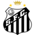

Santos Futebol Clube
O Santos Futebol Clube, mais conhecido apenas como Santos, é um clube brasileiro fundado em 14 de abril de 1912, com sede na cidade homônima. Inicialmente suas cores seriam o branco, azul e dourado, mas um ano após a sua fundação, ficou decidido que as cores do clube passariam a ser branco e preto. O clube manda as suas partidas no Estádio Urbano Caldeira, mais conhecido como Vila Belmiro.Seus maiores rivais no futebol são o Palmeiras, com quem disputa o Clássico da Saudade; o Corinthians, com quem disputa o Clássico Alvinegro; e o São Paulo, com quem disputa o San-São; também disputa com a Portuguesa Santista o Clássico das Praias, embora em menor grau de rivalidade.
O Santos tornou-se no futebol um dos clubes mais bem-sucedidos do Brasil e reconhecidos mundialmente.Ficou famoso na década de 1960 pelos vários títulos internacionais e nacionais conquistados e por ter revelado Pelé, considerado por muitos como o maior jogador da história do esporte
História
O Santos Futebol Clube foi fundado no dia 14 de abril de 1912, por iniciativa de três esportistas da cidade, Francisco Raymundo Marques, Mário Ferraz de Campos e Argemiro de Souza Júnior, que convocaram uma assembleia na sede do Clube Concórdia, para a criação de um time de futebol.Durante a reunião, surgiu a dúvida quanto ao nome que seria dado a essa agremiação, várias sugestões apareceram como, Brasil Atlético, Euterpe e Concórdia, mas os participantes da reunião decidiram por unanimidade a proposta de Edmundo Jorge de Araújo: a denominação Santos Foot-Ball Club.
As cores iniciais do Santos FC[44] eram o branco, o azul e o dourado, mas como era difícil na época a confecção de um uniforme nessas cores, ficou decidido no dia 31 de março de 1913 que o clube passaria a ser alvinegro.
Estádio
Em 1915 os dirigentes passaram a procurar terrenos na cidade. Em 31 de maio de 1916, uma assembleia geral aprovou a compra de uma área de 16 650 metros quadrados, no bairro da Vila Belmiro, aprovado pelo presidente do clube, Agnello Cícero de Oliveira. A compra do terreno foi feita em 16 de junho de 1916.A construção do Estádio Urbano Caldeira, a Vila Belmiro, foi concluída em 1916 e sua inauguração ocorreu em 12 de outubro do mesmo ano, mas a primeira partida foi realizada somente 10 dias depois, em 22 de outubro de 1916, válido pelo Campeonato Paulista. A partida de estreia foi entre Santos e Ypiranga, onde o Santos venceu por 2 a 1, cujo primeiro gol da partida e da história do estádio foi feito por Adolpho Millon Júnior, da equipe santista.
Escudo
Uniformes
- 1º - Camisa branca, calções e meias brancas.
- 2º - Camisa com listras verticais em preto e branco, calções e meias pretas.
Conquistas
| Escudo | Total | Principais Conquistas |
|---|---|---|
|  | 46 | 2 Mundiais, 3 Libertadores, 9 Nacionais, 23 Estaduais |